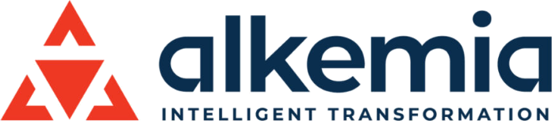
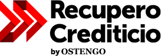

Product Manager
Product Owner · Business Analyst · Analista Funcional
Más de 5 años en análisis de procesos, gestión IT e implementación de sistemas, hoy aplicados a la gestión de productos digitales.
Tucumán, Argentina · Presencial, híbrido o remoto
Soy Product Manager. Lidero el discovery y la definición de productos digitales, desde el relevamiento de la necesidad hasta su puesta en producción.
Antes de producto, trabajé en operaciones, gestión IT e implementación de sistemas: lideré un equipo de 9 analistas, gestioné la demanda de tecnología de una empresa con cinco proveedores IT y participé en una implementación de SAP S/4HANA para 150 usuarios. Esa experiencia me permite diseñar soluciones que contemplan tanto al usuario final como las condiciones reales de la operación.
Desde la consultoría sumé la mirada de mercado: investigación, propuesta de valor y posicionamiento, aplicados en el lanzamiento de KOKO y en el rebranding de Sunday Money. Busco aportar esa combinación de negocio, procesos y tecnología a un equipo de producto.


Gestión de productos digitales y proyectos de consultoría, desde el análisis de las necesidades del negocio hasta la definición y ejecución de soluciones. Lidero el discovery y la definición funcional de una plataforma web en desarrollo: flujos, mockups en Figma, historias de usuario y criterios de aceptación. También desarrollamos tableros de control en Power BI y proyectos integrales de marca y puesta en marcha, como KOKO.
Relevamiento y análisis de requerimientos funcionales con usuarios y stakeholders en proyectos sobre Creatio CRM. Documentación de requerimientos, procesos y reglas de negocio, para alinear las necesidades del cliente con los equipos técnicos. Validación funcional de configuraciones y desarrollos durante la implementación.
Implementación de SAP S/4HANA con la metodología SAP Activate para 1 sociedad, 2 sucursales y 2 depósitos, con alcance en MM, WM, SD y FI/CO. Mi foco funcional: MM, WM e IM. Relevamiento As-Is, diseño To-Be, configuración funcional, integración con FI, pruebas UAT de punta a punta y soporte posterior al go-live.
Detección de necesidades tecnológicas de las distintas áreas del negocio y su traducción en requerimientos. Priorización de la demanda según valor e impacto, y coordinación de los proveedores IT, cada uno con su backlog, junto a las áreas de negocio y los equipos técnicos hasta la puesta en producción.
Liderazgo del equipo a cargo de los circuitos de compras, pagos y facturación. Reorganización de procesos para fortalecer los controles: más legajos pagados en tiempo y forma sin perder descuentos por pronto pago, y menos incidencias por errores de precio o mercadería defectuosa. Diseño de tableros de indicadores.
Coordinación del equipo de asesores dedicado a cobranzas y campañas de recupero. Elaboración de reportes comerciales y financieros. Definición de estrategias de recupero e indicadores de desempeño.
Ingresé como asesora comercial y a los seis meses pasé por concurso interno a asesora de riesgo de la sucursal Tucumán. Gestioné productos financieros y realicé análisis de riesgo, rentabilidad y seguimiento de carteras. El equipo de la sucursal superó los 100 clientes en diez meses, mientras que las otras provincias tardaron más de un año. En un año y medio, la cartera llegó a unos 150 clientes, con una mora cercana al 8 %, por debajo de la media. También integré los comités que otorgaban financiamiento a proyectos e ideas de negocio en etapa inicial.
Proyectos de consultoría en los que acompañé a cada cliente en todo el ciclo: investigación de mercado, discovery de productos digitales, propuesta de valor, posicionamiento, identidad de marca y puesta en marcha. Hoy, desde SVEN Consultora.
App web para alumnos de una facultad de la UNT · SVEN Consultora
Evolución de un portal estudiantil hacia una app web instalable que centraliza en el celular la información de cada alumno: clases, aulas, fechas de exámenes, avisos por comisión, trámites y correlativas, con un asistente de preguntas frecuentes. Lidero la estrategia y el discovery del producto, con foco en los ingresantes.
Diagnóstico
Análisis del mercado, de los usuarios y del portal actual: el primer año concentra la mayor dificultad, la información se dispersa en grupos de WhatsApp y la atención depende de pocas personas.
Estrategia
Tres pilares (información personalizada, autogestión de dudas y acompañamiento en los momentos críticos de la carrera), cada uno con sus OKRs y un árbol de KPIs para medir el impacto.
Discovery
Customer journey, árbol de oportunidades y soluciones, mapa de supuestos e hipótesis medibles para validar con los próximos ingresantes antes de escalar.
Del naming a la apertura del local · SVEN Consultora
Creación integral de una nueva marca de café, yogurt helado y helado soft en el centro de San Miguel de Tucumán, en una cuadra con varios competidores consolidados.
Para quién
Familias en primer lugar, y también personas solas o en pareja que buscan un café, un helado o un yogurt helado.
Cómo lo trabajé
Lideré el proyecto completo: investigación de mercado, con un relevamiento de 44 locales de la zona, naming y branding. Coordiné el trabajo de un diseñador para la parte gráfica y la papelería.
Qué entregué
Manual de marca, que incluye el diseño del packaging (vasos, conos, bolsas y stickers) y de los uniformes del personal, y el montaje del local, inaugurado a fines de agosto de 2026.
De consultora independiente a directora del equipo de marketing
Fintech de préstamos para personas y empresas. Ingresé como consultora independiente cuando la marca necesitaba redefinir su identidad y su posicionamiento. Presenté la recomendación al directorio, que la aprobó, lideré el rebranding y asumí la dirección del equipo de marketing interno.
Para quién
Personas y empresas que necesitan financiamiento.
Cómo lo trabajé
Investigación del ecosistema fintech y análisis competitivo, encuestas anónimas y en la calle, y pruebas preliminares para validar el nuevo posicionamiento. Dirigí al equipo interno, un analista y un diseñador, en campañas, SEO, contenidos y redes.
Qué entregué
Informes mensuales sobre el desempeño en redes, las acciones realizadas y el presupuesto utilizado; un informe con los resultados de las encuestas y recomendaciones; y los requerimientos y las pruebas de la nueva web, desarrollada por un proveedor externo.
Resultado
Una web más clara para el usuario, una solicitud de préstamo más simple y un menor tiempo promedio de evaluación crediticia.
Estrategia de comunicación y organización de la propuesta comercial. Gestión de espacios publicitarios y coordinación con anunciantes.
Análisis competitivo, posicionamiento de marca y propuesta comercial diferenciada con lineamientos de presencia digital.
Conceptualización de una startup: investigación de mercado, modelo de negocio y narrativa para inversores.
Implementación de SAP S/4HANA, simplificación del back office y digitalización del circuito de pago a proveedores.
Relevamiento As-Is y diseño To-Be de procesos administrativos y financieros. Coordinación de mesas de trabajo entre áreas para rediseñar el flujo de caja, el presupuesto y el circuito Procure-to-Pay. Análisis de dotación (FTE) por puesto.
Implementación de punta a punta con la metodología SAP Activate, con alcance en MM, WM, SD y FI/CO. Participación en el relevamiento funcional, la configuración de MM, WM e IM, el diseño To-Be, las pruebas UAT y el soporte durante el go-live y la estabilización.
Digitalización del circuito de pago a proveedores, desde la orden de compra hasta la orden de pago. Implementación de una plataforma con workflow de aprobaciones y un portal de autogestión para proveedores.
Formación continua en gestión de producto, metodologías ágiles y SAP, y más recientemente en automatización con inteligencia artificial.
Universidad Nacional de Tucumán
Universidad Empresarial Siglo 21
Busco sumarme a un equipo de producto como Product Manager o Product Owner. También estoy abierta a roles de Business Analyst, Project Manager y Analista Funcional, y a proyectos freelance o de consultoría.
carla.bogamassa@gmail.com